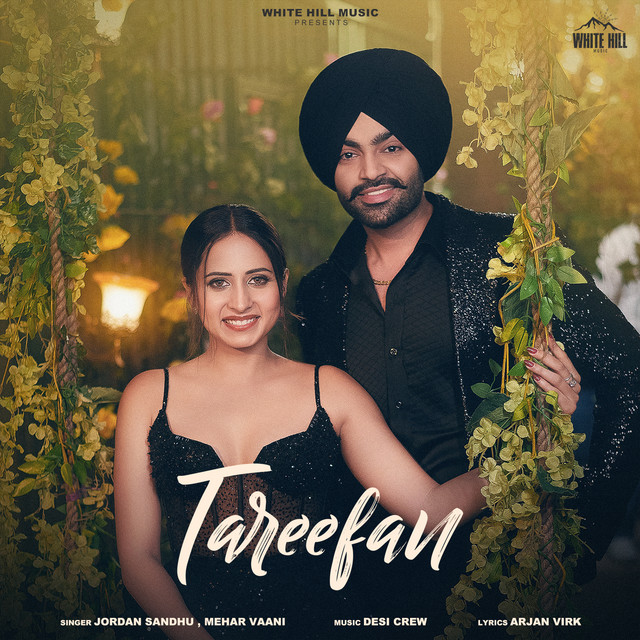
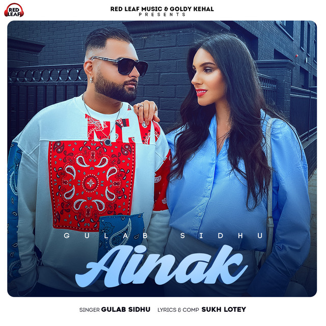
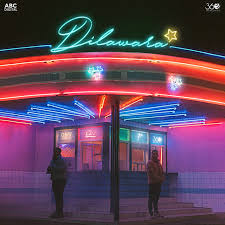

Playlist
Trending Now Punjabi
All that's viral, stream now!
Playlist
Trending Now Punjabi
All that's viral, stream now!
#
Title
Album
1
Hot Shit
E Arjan Dhillon Chobar 2:43
E Arjan Dhillon Chobar 2:43
2
Murder
Real Boss , BIG KAY SMG Murder 3:02
Real Boss , BIG KAY SMG Murder 3:02
3
 Chheti De Drivari Sikha
Chheti De Drivari Sikha
Satnam Sagar , Sharanjeet Shammi Munda Hon Diyan Pudeeyan 4:16
Chheti De Drivari Sikha
Satnam Sagar , Sharanjeet Shammi Munda Hon Diyan Pudeeyan 4:16
4
 Hass Hass
Hass Hass
Dilijit Dosanjh , Sia , Greg Kurstin Hass Hass 2:33
Hass Hass
Dilijit Dosanjh , Sia , Greg Kurstin Hass Hass 2:33
5
 Softly
Softly
Karan Aujla , Ikky Making Memories 2:35
Softly
Karan Aujla , Ikky Making Memories 2:35
6
Aa
Roach Killa , Arif Lohar , Deep Jandu Aa 3:10
Roach Killa , Arif Lohar , Deep Jandu Aa 3:10
7
 WYS
WYS
E Real Boss , Baggh-e SMG , Farmaan SMG , BIG... WHEN WE RIDE 2:57
WYS
E Real Boss , Baggh-e SMG , Farmaan SMG , BIG... WHEN WE RIDE 2:57
8
 Apa Fer Milaange
Apa Fer Milaange
Savi Kahlon Apa Fer Milaange 4:14
Apa Fer Milaange
Savi Kahlon Apa Fer Milaange 4:14
9
 Koi Si
Koi Si
Afsana Khan , Nirmaan Koi Si 3:19
Koi Si
Afsana Khan , Nirmaan Koi Si 3:19
10

Tareefan
Jordan Sandhu , Mehar Vaani Tareefan 3:12
Jordan Sandhu , Mehar Vaani Tareefan 3:12
11
 Mi Amor
Mi Amor
Sharn , 40k , The Paul Mi Amor 3:23
Mi Amor
Sharn , 40k , The Paul Mi Amor 3:23
12
Outlaw
Sidhu Moose Wala Outlaw 3:00
Sidhu Moose Wala Outlaw 3:00
13
 Ve Haaniyaan
Ve Haaniyaan
Danny , Avvy Sra , Sagar Ve Haaniyaan 4:00
Ve Haaniyaan
Danny , Avvy Sra , Sagar Ve Haaniyaan 4:00
14
GOOD LIFE GOOD THOUGHTS
E Baggh-e SMG , Farmaan SMG , BIG KAY SMG WHEN WE RIDE 3:30
GOOD LIFE GOOD THOUGHTS
E Baggh-e SMG , Farmaan SMG , BIG KAY SMG WHEN WE RIDE 3:30
15
Angels
HRJXT , Intense Twenty Two 3:24
HRJXT , Intense Twenty Two 3:24
16
 Choti Jehi Zindagi
Choti Jehi Zindagi
ShamPreet Choti Jehi Zindagi 3:05
Choti Jehi Zindagi
ShamPreet Choti Jehi Zindagi 3:05
17
 Boo Thang
Boo Thang
Varinder Brar , Jyotica Tangri , Gill Saab Music Boo Thang 2:41
Boo Thang
Varinder Brar , Jyotica Tangri , Gill Saab Music Boo Thang 2:41
18
 Love Ya
Love Ya
Dilijit Dosanjh , Sagar Love Ya 2:41
Love Ya
Dilijit Dosanjh , Sagar Love Ya 2:41
19
Koka
Mankirt Aulakh , Simar Kaur Koka 3:10
Mankirt Aulakh , Simar Kaur Koka 3:10
20
 8 ASLE
8 ASLE
E Sukha , Chani Nattan , Prodgk , Gurlez Akhtar UNDISPUTED 2:41
8 ASLE
E Sukha , Chani Nattan , Prodgk , Gurlez Akhtar UNDISPUTED 2:41
21
 Kaley Sheshe
Kaley Sheshe
E Addy Nagar , Aniket Jain Kaley Sheshe 3:31
Kaley Sheshe
E Addy Nagar , Aniket Jain Kaley Sheshe 3:31
22
Kamlee
SARRB , Starboy X Kamlee 3:29
SARRB , Starboy X Kamlee 3:29
23
 Ghar Bharte
Ghar Bharte
Arjan Dhillon Ghar Bharte 3:16
Ghar Bharte
Arjan Dhillon Ghar Bharte 3:16
24
Afterhours
Bir , Dhanju , thiarajxtt Afterhours 2:20
Bir , Dhanju , thiarajxtt Afterhours 2:20
25
 Still Rollin
Still Rollin
Shubh Still Rollin 2:54
Still Rollin
Shubh Still Rollin 2:54
26
 Desi Hood
Desi Hood
Saabi Bhinder , Cheetah Walk in Victory 2:26
Desi Hood
Saabi Bhinder , Cheetah Walk in Victory 2:26
27
 Amiri
Amiri
Dilijit Dosanjh , thiarajxtt Ghost 1:57
Amiri
Dilijit Dosanjh , thiarajxtt Ghost 1:57
28
 Off Roading
Off Roading
Khan Bhaini Off Roading 3:21
Off Roading
Khan Bhaini Off Roading 3:21
29
Case
Dilijit Dosanjh , Intense Ghost 2:15
Case
Dilijit Dosanjh , Intense Ghost 2:15
30
 Nimm Thalle
Nimm Thalle
Jordan Sandhu , Desi Crew Nimm Thalle 3:00
Nimm Thalle
Jordan Sandhu , Desi Crew Nimm Thalle 3:00
31
Kinni Kinni
Dilijit Dosanjh , thiarajxtt Ghost 3:33
Kinni Kinni
Dilijit Dosanjh , thiarajxtt Ghost 3:33
32

Ainak
Gulab Sidhu , Sukh Lotey Ainak 2:58
Gulab Sidhu , Sukh Lotey Ainak 2:58
33
 California Love
California Love
E Cheema Y , Gur Sidhu ANYWAY 2:55
California Love
E Cheema Y , Gur Sidhu ANYWAY 2:55
34
Cheques
Shubh Still Rollin 3:03
Cheques
Shubh Still Rollin 3:03
35
 Check It Out
Check It Out
Parmish Verma , Paradox Check It Out 3:15
Check It Out
Parmish Verma , Paradox Check It Out 3:15
36
Lalkara
Dilijit Dosanjh , Intense , Sultaan Ghost 2:40
Lalkara
Dilijit Dosanjh , Intense , Sultaan Ghost 2:40
37
 Aam Jahe Munde
Aam Jahe Munde
Parmish Verma , PARDHAAN Aam Jahe Munde 3:27
Aam Jahe Munde
Parmish Verma , PARDHAAN Aam Jahe Munde 3:27
38
 White Brown Black
White Brown Black
Avvy Sra , Karan Aujla , Jaani White Brown Black 2:55
White Brown Black
Avvy Sra , Karan Aujla , Jaani White Brown Black 2:55
39
 My Prime
My Prime
Navaan Sandhu , bebhumika Naveezy 4:10
My Prime
Navaan Sandhu , bebhumika Naveezy 4:10
40
Jee Ni Lagda
Karan Aujla , Ikky Making Memories 2:19
Jee Ni Lagda
Karan Aujla , Ikky Making Memories 2:19
41
Rubicon
Prem Dhillon , Rass Rubicon 4:11
Prem Dhillon , Rass Rubicon 4:11
42
Attraction
Sukha , Prodgk Attraction 3:03
Sukha , Prodgk Attraction 3:03
43
 One Love
One Love
Shubh One Love 2:39
One Love
Shubh One Love 2:39
44
P.O.V (Poin of View)
Karan Aujla, Yeah Proof
P.O.V (Poin of View)
3:05
Karan Aujla
45
 Take It Easy
Take It Easy
Karan Aujla , Ikky Four You 3:30
Take It Easy
Karan Aujla , Ikky Four You 3:30
46
 Daku
Daku
Chani Nattan , Inderpal Moga Daku 2:11
Daku
Chani Nattan , Inderpal Moga Daku 2:11
47
 The Last Ride
The Last Ride
Sidhu Moose Wala , Wazir Patar The Last Ride 4:22
The Last Ride
Sidhu Moose Wala , Wazir Patar The Last Ride 4:22
48
 Showstopper
Showstopper
E JERRY Showstopper 2:26
Showstopper
E JERRY Showstopper 2:26
49
 Sidhu Son
Sidhu Son
Sidhu Moose Wala Moosetape 3:37
Sidhu Son
Sidhu Moose Wala Moosetape 3:37
50
 On Top
On Top
Karan Aujla On top 3:03
On Top
Karan Aujla On top 3:03
51
 Death Row
Death Row
Ninja , J.Hind , Deep Jandu Death Row 3:05
Death Row
Ninja , J.Hind , Deep Jandu Death Row 3:05
52
Gangsta
E Karan Aujla , YG Way Ahead 3:10
E Karan Aujla , YG Way Ahead 3:10
53
Ittar
Jasmine Sandlas , B Praak Ittar 3:20
Jasmine Sandlas , B Praak Ittar 3:20
54
 Tu Te Sharab
Tu Te Sharab
Jordan Sandhu , Desi Crew Tu Te Sharab 3:15
Tu Te Sharab
Jordan Sandhu , Desi Crew Tu Te Sharab 3:15
55

Dilawara
The PropheC , B Ezu Dilawara 3:42
The PropheC , B Ezu Dilawara 3:42
56
 Players
Players
E Badshah , Karan Aujla , Devika Badyal 3:00 AM Sessions 2:51
Players
E Badshah , Karan Aujla , Devika Badyal 3:00 AM Sessions 2:51
57
Her
Shubh Her 2:34
Shubh Her 2:34
58
 wo Noor
wo Noor
AP Dhillon Two Hearts Never Break The Same 3:19
wo Noor
AP Dhillon Two Hearts Never Break The Same 3:19
59
295
Sidhu Moose Wala Moosetape 4:30
295
Sidhu Moose Wala Moosetape 4:30
60
 Kina Chir
Kina Chir
The PropheC The Lifestyle 3:36
Kina Chir
The PropheC The Lifestyle 3:36
61
 One Question
One Question
Tegi Pannu , Manni Sandhu Disturbind the Peace 2:49
One Question
Tegi Pannu , Manni Sandhu Disturbind the Peace 2:49
62
 Never Fold
Never Fold
Sidhu Moose Wala , Sunny Malton , SOE No Name 3:03
Never Fold
Sidhu Moose Wala , Sunny Malton , SOE No Name 3:03
63
Sheesha
Karan Aujla Sheesha 2:40
Karan Aujla Sheesha 2:40
64
 Tere Te
Tere Te
AP Dhillon , Gurinder Gill HIDDEN GEMS 1:54
Tere Te
AP Dhillon , Gurinder Gill HIDDEN GEMS 1:54
65
Elevated
E Shubh Elevated 3:20
E Shubh Elevated 3:20
66
Everybody Hurts
Sidhu Moose Wala No Name 2:53
Everybody Hurts
Sidhu Moose Wala No Name 2:53
67
 Lover
Lover
Dilijit Dosanjh MoonChild Era 3:10
Lover
Dilijit Dosanjh MoonChild Era 3:10
68
Untouchable
Tegi Pannu , Manni Sandhu Untouchable 2:33
Tegi Pannu , Manni Sandhu Untouchable 2:33
69
These Days (feat. Bohemia)
Sidhu Moose Wala , Bohemia Moosetape 3:29
These Days (feat. Bohemia)
Sidhu Moose Wala , Bohemia Moosetape 3:29
70
SPACESHIP
AP Dhillon , Shinda Kahlon , Gminxr HIDDEN GEMS 2:04
SPACESHIP
AP Dhillon , Shinda Kahlon , Gminxr HIDDEN GEMS 2:04
71
 Distance Love
Distance Love
Zehar Vibe Distance Love 3:30
Distance Love
Zehar Vibe Distance Love 3:30
72
Love Sick
Sidhu Moose Wala , AR Paisley No Name 3:52
Love Sick
Sidhu Moose Wala , AR Paisley No Name 3:52
73
Ykwim
Karan Aujla , KR$NA , Mehar Vaani Ykwim 3:14
Karan Aujla , KR$NA , Mehar Vaani Ykwim 3:14
74
 Peaches
Peaches
Dilijit Dosanjh Drive Thru 3:09
Peaches
Dilijit Dosanjh Drive Thru 3:09
75
0 to 100
Sidhu Moose Wala No Name 1:48
0 to 100
Sidhu Moose Wala No Name 1:48
May 15, 2021
2021 Sidhu Moose Wala
2021 Sidhu Moose Wala
You might also like

Hot Hits Punjabi
By Spotify

Punjabi 101
By Spotify

Best of Punjabi 10...
By Spotify

Top Punjabi Artist...
By Spotify

Chill Karlo
By Spotify